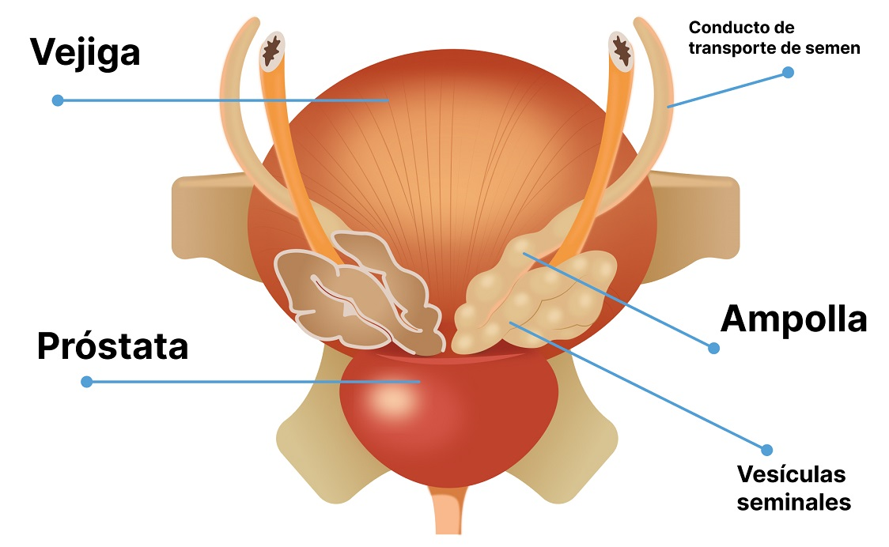
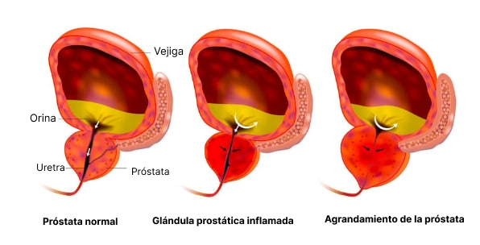
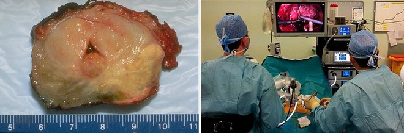
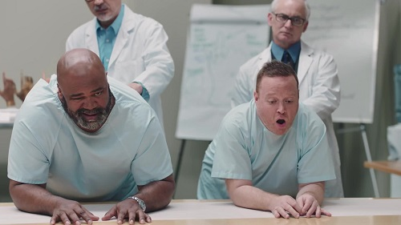
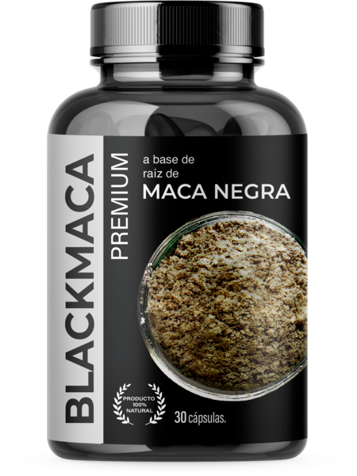
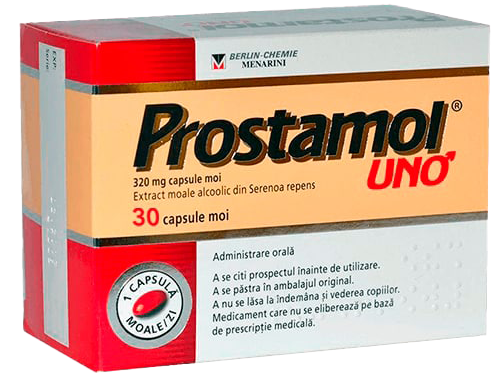

EN ISRAEL la prostatitis se cura en 2-3 semanas, de una vez
por todas.
(lea el método más adelante)
Mientras tanto en nuestro país: los médicos codiciosos, en connivencia con las farmacias, nos ocultan productos efectivos y extorsionan dinero a los hombres todos los años.
La prostatitis es la enfermedad más difundida entre los hombres mayores de 40 años. Aún más, los médicos notan una tendencia desagradable del «rejuvenecimiento» de esta enfermedad. Hombres de 30, 25 y hasta de 20 años se dirigen a médicos con sus «problemas» más a menudo.

Los médicos explican la popularidad de esta enfermedad por sus premisas: un hombre que:
- lleve una vida sedentaria,
- tenga actividad sexual irregular,
- tenga malos hábitos,
- haya superado enfermedades infecciosas,
- tenga predisposición familiar,
- haya estado estresado, enfermo o sobreenfriado,
seguramente tiene problemas con la próstata. Cuanto más haya premisas, tanto más pronto los tendrá. Alguien a 25 años, alguien a los 45, es la cuestión del tiempo.
Síntomas de la prostatitis: compruébelos:

En 2018, el departamento de la urología publicó estadísticas impactantes: más del 55% de los hombres mayores de 40 años se encuentran con los problemas de la glándula prostática en una u otra forma. Es muy fácil determinar la prostatitis sin tener educación médica, la mayor parte de sus síntomas es especial:
-
Dolor agudo o tirante:
- abajo del abdomen, en el escroto;
- en la entrepierna o en el pene;
-
Desorden de la micción:
- micción frecuente, quemazón en la uretra;
- sensación de «vejiga no vaciada»;
- micción dificultada (flujo débil);
-
Trastorno del funcionamiento sexual:
- libido reducido;
- deterioro de la duración y la calidad de la erección;
-
Trastorno de la eyaculación:
- la eyaculación precoz y problemas con su logro;
- eyaculación débil.
-
Además, la alta fatiga e irritación del cuerpo.
Pero, a pesar de que la vida de muchos hombres se empeora, ellos viven con la prostatitis por años sin sospechar las consecuencias irreversibles a las que pueden llevar esas sensaciones desagradables.

Por una parte, se les puede entender, el diagnóstico de la próstata es un proceso desagradable y confuso para cualquier hombre que comprenda su sentido. Además, en la mayoría de los casos después de haber diagnosticado la prostatitis, la consulta al urólogo es una tortura anual. Los médicos quitan los síntomas más agudos con los productos «recomendados por los farmacéuticos». Sin embrago, con cada sobreenfriamiento o con la falta del régimen prescrito, la prostatitis «vuelve a aparecer».
Cómo se cura la prostatitis en México (y cómo NO debe curarse)
Lo peor es que no podrá deshacerse de la prostatitis aun si quiere mucho hacerlo.
El procedimiento normal de la cura de la prostatitis:
- Un hombre se dirige al hospital. Público o privado – no importa, que al final tendrá que pagar.
- El médico lo examina y le prescribe un montón de análisis unos de los cuales son innecesarios. Son por si a caso, a lo mejor aparece algo que se pueda curar. Además los análisis cuestan un dineral.
- Luego el médico diagnostica la prostatitis y prescribe «productos recomendados». Estos productos son para quitar los síntomas agudos pero ellos no curan la prostatitis crónica.Y, claro, el urólogo recomienda los productos de las empresas cuyas representantes le hayan dado más dinero. Todo el mundo conoce estos productos.
- De soborno a los productos “recomendados” para quitar los síntomas, los médicos
prescriben el masaje rectal de la próstata o un tratamiento parecido con aparatos. Es un procedimiento
humillante y muy desagradable – el masaje se hace con el dedo a través del ano. En general, son unas
10-14 sesiones de tal masaje. Cada sesión también debe ser pagada. En los países europeos, esto no se
ha practicado durante más de 20 años, ¡porque los productos modernos pueden curar la prostatitis sin
masaje!

- Aparte del tratamiento básico, los médicos pueden prescribir unos productos para mejorar el funcionamiento sexual, la calidad de esperma, para «restablecer el cuerpo» de los antibióticos, etc.
Como resultado, el tratamiento de la prostatitis costará de 620 mil a 3.2 millones pesos, los urólogos componen un curso de tratamiento dependiendo de las capacidades financieras del paciente. Pero solamente se quitarán los síntomas agudos de la enfermedad. La prostatitis crónica volverá a aparecer una vez el hombre se enfríe o deje de seguir el régimen prescrito. Como resultado, tendrá que pagar un dineral anualmente— es cómo funciona el negocio entre urólogos y farmacéuticos.
Cómo los hombres en Israel se deshacen de la prostatitis (cómo DEBE hacerse)
En Israel, para deshacerse de la prostatitis, no es necesario consultar a un médico. Cuando aparecen los primeros síntomas, hay que ir a la farmacia a comprar un suplemento que no está en el mercado ¡solo porque ayuda a acabar con la prostatitis crónica (de una vez por todas)! Naturalmente, tal producto no beneficiará a la mafia farmacéutica mexicana. Es mucho más rentable para ellos aliviar los síntomas agudos todos los años por dinero que permitir que los pacientes se deshagan de la prostatitis para siempre.
A diferencia de nuestro país, en Israel el sector de seguros es muy desarrollado. Las
empresas de seguros no están interesadas 1 de cada 2 hombres se dirija a los médicos 2 veces al año — son
ellas que tienen que pagar las consultas, y los médicos cobran bien en Israel. Por el contrario, las
compañías de seguros quieren que los pacientes se recuperen lo antes posible. De una vez por todas.
En
Israel, los intereses de las empresas de seguros han vencido la mafia de farmacias y, afortunadamente, los
hombres siempre pueden encontrar el producto efectivo contra la prostatitis en venta...
¿Cambiará la situación para lo mejor?
Por desgracia, no podemos esperar un cambio positivo de farmacias y médicos en México – el negocio farmacológico trae billones de euros a los funcionarios más altos de México.
Sin embargo, hoy en día no es necesario acudir a las farmacias para comprar un producto que realmente funcione. Se puede hacerlo online en sitios especiales. Recientemente, ha llegado a México uno de los suplementos para la prostatitis más efectivos, . Y casi inmediatamente ha ganado la gloria nacional.
Vamos a comparar con el producto contra la prostatitis más famoso en México recomendado por las farmacias, Prostamol Uno:
|

|
 Prostamol Uno |
|
|---|---|---|
| Precio: | por 30 cápsulas. Tratamiento recomendado: 3 paquetes = 2670 pesos. | Unos 1500 euros por 30 supositorios. Curso recomendado: 2 cajas = 3000 euros. |
| Efecto: | Ayuda a deshacerse de la prostatitis. | Quita solo los síntomas agudos de la prostatitis – dolores y desórdenes de micción. |
| Ayuda a: | º Aumentar la libido º Prevenir la eyaculación precoz º Mejorar la potencia º Normalizar la vejiga º Mejorar el estado de los vasos sanguíneos. |
Licuefacción, aumento del peristaltismo |
| Efectos secundarios, daños al cuerpo | No hay. Composición 100% natural. | º Con la administración frecuente, lleva a los cambios drásticos en la
glándula prostática º Reduce la potencia º Causa problemas del intestino º Suprime la inmunidad, desarrolla las alergias º Causa dolor agudo en el estómago |
| Modo de funcionar: | Cura integralmente el sistema genitourinario masculino, mejora el estado de la próstata debido a una combinación de ingredientes naturales únicos, tiene un efecto antiinflamatorio y tónico. Limpia la próstata de toda la flora patogénica, mejora sus funciones y estructura. Un tratamiento con ayuda a deshacerse de la prostatitis de una vez por todas. | Temporalmente quita el dolor en la próstata, camuflando el curso de la enfermedad. Pero después, la enfermedad vuelve a aparecer. |
| Composición: | Componentes naturales vegetales y vitaminas | Samprost, estearato cálcico monohidratado, crospovidona, citrato de trietil, dióxido de titanio y otros elementos químicos |
En México, ¡el productor ha conseguido hacer este producto disponible para todos y cada uno! Después de haber negociado "con las personas correctas" se ha podido lanzar el programa nacional "Salud masculina". Los objetivos del programa: brindar a cada hombre la oportunidad de deshacerse de la prostatitis sin contraer cáncer y otras complicaciones, independientemente de su situación financiera.
solo se puede comprar en línea del fabricante oficial.
Existe una campaña de gran escala contra este producto iniciada por las cadenas de farmacias más grandes del país. Es posible que muy pronta esté fuera de venta. Recomendamos adquirir mientras se pueda hacerlo.
Comentarios
Miguel D (México)
¡Gracias por este artículo tan interesante! En México todo está tan corrupto, qué bien que todavía tengamos acceso a Internet. He pedido undescuento del 50% . Voy a curarme.
José Moliner (Mérida)
¡Estoy totalmente de acuerdo! es una maravilla. Lo compré en Italia, donde descansé el verano pasado, pero por casi 150 euros. Antes sufría mucho de prostatitis crónica, unos 10 años como mínimo. Traté de curarla pero como dicen otros comentarios pude conseguir solo el efecto a corto plazo. Y solo después del tratamiento con mejoré. Ya más de medio año no ha habido ni un síntoma. Antes ni podía soñarlo. Lo recomiendo a todos los hombres. ¡Seguro que os ayudará!
Fernando (Cancún)
Lo he pedido. Realmente he recibido undescuento del 50% . ))) Estoy muy sorprendido. ¡Gracias!
Carlos G (Oaxaca)
Yo también he tomado este suplemento. Lo pedí a través de este sitio, pero no había descuento entonces y lo compré a precio completo. Pero no me arrepiento. Lo importante es que me ayudó a deshacerme de la prostatitis en unas 2 semanas sin necesidad de masaje.
Migue (Puebla)
Lo pedí
Bernardo Torre (Guanajuato)
Ví una vez una emisón sobre el negocio farmacológico en México. Fue un tipo de investigación. Entre otras cosas mencionaron este suplemento. Dijeron que ahora está disponible pero puede desaparecer pronto del mercado. Hay que tomarlo mientras lo hay.
Pablo Zuñiga (Guadalajara)
Tengo prostatitis crónica desde la edad de 28 años. Ahora tengo 41. Lo he curado 2 veces cuando tuve agravamientos fuertes. La última vez estuve a punto de morir. Los médicos me dijeron que mi prostatitis estaba a punto de transformarse en el cáncer de próstata. Por eso aconsejo a todos los que sufren de prostatitis que la curéis cuanto antes. Es una enfermedad muy peligrosa.
Josefa (Mérida)
Hay que pedir uno para mi marido. ¡Gracias!
Ramón (Tijuana)
Es verdad, he recibido con undescuento del 50% . Nunca he visto una
oferta parecida. ¡Gracias a los fabricantes!
Victor (México)
es el mejor suplemento. Estoy de acuerdo con el artículo y todos los comentarios buenos. Lo tomé hace unos 3 meses. Antes sufría de prostatitis unos años, tenía problemas de erección, acababa muy rápido. Ahora todo está bien.